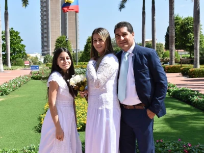
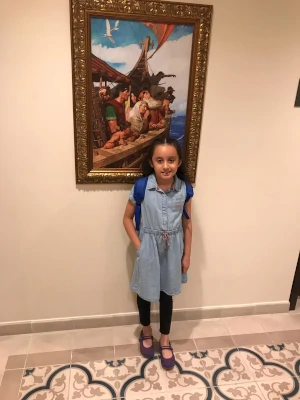
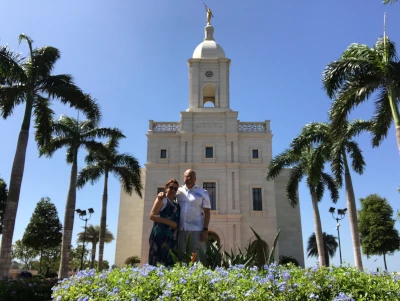

Description of the target audience
Members of the Church of Jesus Christ of Latter-day Saints days living in the Departments of Guajira, Cesar, Magdalena, Bolivar, Córdoba, and Sucre, Colombia, who attend the Temple of Barranquilla, located in the City of Barranquilla, Caribbean Coast of Colombia.
Personas
Maria Cristina, Alexander, and Numerlys were sealed in the Barranquilla Temple. They are now a family united for eternity under the covenant of holy matrimony. They live in Barranquilla but celebrated their wedding in a hotel near the temple where they shared with relatives friends and family.
Daniela is 9 years old and loves going to the Barranquilla temple with her parents. She lives with her parents in the City of Valledupar, Department of Cesar, five hours from the Barranquilla Temple. Daniela enjoys the Temple gardens very much, although she usually waits for her parents in the service building next to the temple. When they attend the Temple they stay at nearby member homes.
Yustine and Cristian, are temple workers residing in the city of Bogotá D.C., 900 km from the city of Barranquilla. They now live in a rented apartment 6 kilometers from the Barranquilla Temple. They will be there until they finish their mission for 2 years. They love to serve in the temple.
According to church statistics, 70% of members reside more than 75 kilometers from the Barranquilla Temple. This means that to go to the temple to perform their ordinances they need to travel and spend the night